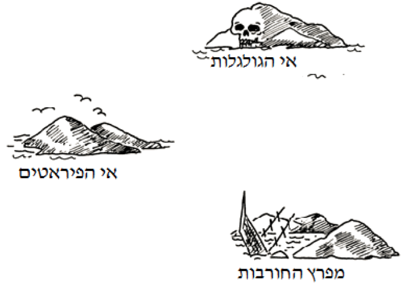
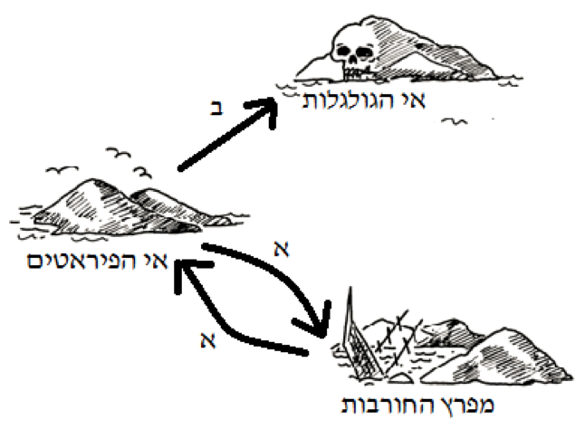

מה המצב
אוטומט סופי דטרמיניסטי
גרסה להדפסה
הנחיות כלליות
פעילות זו אינה דורשת ידע מוקדם מצד הקבוצה.
ניתן להעביר אותה במספר רמות של קושי. לאורך המערך מוצגות נקודות דיון למתקדמים, ולכן מומלץ להעביר אותה לאחר היכרות עם הקבוצה ולהתאימה לרמתם.
במערך שיעור זה נתייחס רק לאוטומט סופי דטרמיניסטי (אותו נכנה פשוט אוטומט על מנת שמירה על הפשטות) ולא ניכנס כלל להגדרת דטרמיניסטי / לא דטרמיניסטי.
מבוא
עיסוק באוטומט סופי דטרמניסטי למעשה מתחלק לשתי מורכבויות: היכרות עם הצורה שבה הוא עובד וכיצד האוטומט רץ (או מנתח קלט), וכן השימושים שניתן לעשות באוטומטים על מנת לבצע יישומים אחרים. בראש ובראשונה השיעור עוסק בהיכרות עם צורת ריצת האוטומט וכיצד אוטומט קיים עובד בהתאם לקלט מסוים. כמו כן בהמשך השיעור אנו למדים כיצד באמצעות המנגנון הזה, אנחנו יכולים לבנות מכונה משלנו אשר תשמש אותנו לצרכים אחרים, כלומר הפיכתו של האוטומט במקרה זה לאמצעי ולא למטרה העיקרית. דוגמאות נפוצות לשימוש באוטומטים הינן עיבוד אותיות או מילים במסמך על מנת לחלץ מתוכם מילים מעניינות (כמו מספרי טלפון, כתובות אימייל וכו'), או אפילו לנתח את הטקסט של תכנית מחשב אחרת על מנת להעביר אותה קומפילציה או אינטרפרטציה. כאמור, חלקו הראשון של השיעור יעסוק בעקיפין בדרך פעולתו של אוטומט באופן כללי, החלק השני יתמקד בצורה הפורמלית יותר של אוטומט, ויעסוק בתחילה ביצירת אוטומט באופן פורמלי בהתאם לצורך יישומי ולבסוף בניתוח ריצתם של אוטומטים פורמליים קיימים. חלקו השלישי של השיעור הוא אופציונלי ועוסק בייצוג אחר של אוטומטים שפות רגולריות (לחלוטין לא חובה). מטרת השיעור היא בעיקר הצגתו של מנגנון פעולה, ולאחר מכן הצגת יישומו לצרכים יישומיים.
אי המטמון
במשחק הבא המטרה של הילדים היא למצוא את אי המטמון. אוניות פיראטים ידידותיות מפליגות לאורך מספר מסלולים קבוע, ומציעות את שירותיהן למחפשי הרפתקאות. מטרת הילדים היא למצוא את המסלול הטוב ביותר לאי המטמון.
לכל אי שאליו מגיעים ניתן לבקש את שירותיה של ספינה א' או ב', אך לא את שתיהן.
הפיראט על האי יבשר לנו לאיזה אי לוקחת אותנו ספינה א' או ספינה ב', אך לאף פיראט אין את המפה של כל האיים, ולכן יודע לספר רק על הספינות שיוצאות מהאי שלו.
הילדים ישתמשו במפות משלהם שאותן הם ימלאו לאורך הפעילות.
פעילות מספר 1
ציירו את מפה 1 הבאה על הלוח: 
צלמו את שלושת הכרטיסיות הבאות, וחלקו אותם לשלושה מתנדבים. שימו לב שהמסלולים על הכרטיסיות שונים מהמסלולים שמופיעים בפעילות עצמה.
התחילו מאי הפיראטים ובקשו את אוניה א'. המתנדבת המקומית תכוון אתכם למפרץ החורבות. סמנו מסלול זה על המפה. במפרץ החורבות בקשו שוב את אוניה א' ותופנו בחזרה לאי הפיראטים. סמנו זאת על המפה. הפעם בקשו את אוניה ב'. סמנו זאת על המפה. הפעם תגיעו לאי הגולגלות, ובשלב זה תיתקעו באי זה.
המפה הסופית אמורה להיראות כך:

פעילות מספר 2
בחרו שבעה ילדים אשר יהיו ה"איים".
כל ילדה תחזיק כרטיסיה אשר תסמן את האי שלה, עם ההוראות הסודיות בגב הכרטיסייה.
מקמו אותם באופן אקראי בכיתה (או מחוצה לה).

לשאר הילדים תינתן מפה ריקה, אשר באמצעותה ינווטו מאי הפיראטים לאי המטמון.
במהלך הניווט הילדים צריכים למלא את המפה שלהם.
לדוגמא כאשר ניגשים לילדה המחזיקה בכרטיסיית מפרץ החורבות ומבקשים את אוניה ב' עליה לכוון אל אי הגולגלות.
הערה: ישנן הרבה דרכים לנהל משחק זה, אחת הדרכים המומלצות היא לתת לכל מנווטת תור לבחירת צעד אחד בלבד, וכך ניתן לשמור על סדר וגם לתת לכל אחת מהילדות הזדמנות שווה. המפה הפתורה:

מי שמסיימת מהר יכולה לנסות למצוא מסלול שני או יותר.
שאלות לדיון
מה היא הדרך הקצרה ביותר (אפשר לצייר את המפה על הלוח)? ב-ב-א-ב
מה יהיה מסלול מאוד איטי? ב-ב-א-א-א-ב-א-ב-א-ב
מסלול מסויימים כוללים "לולאות", להזמין מישהו ללוח למצוא אחד כזה.
לאחר שסיימנו את הפעילות ציירו המפה הסופית על הלוח והקיפו את האיים בעיגולים.
נסביר שניתן לכנות את המפה אוטומט או מכונת מצבים.
נתחיל להגדיר ולהסביר את המושג תוך כתיבה מפורטת על הלוח.
בכל מאפיין\מגדיר של האוטומט נראה איך הוא בא לידי ביטוי בדוגמא שלנו מפעילות 1.
אוטומט מוגדר באמצעות המושגים הבאים:
הא"ב - א' וב' מהפעילות הראשונה
(קבוצת) המצבים - האיים
המצב ההתחלתי - אי הפיראטים
המצבים המקבלים - אי המטמון (מה היה קורה אם היה לנו מטמון על שני איים) – נקיף בעוד עיגול נוסף על הלוח
המעברים בין מצב למצב - מסלולי אוניות הפיראטים
הערה: התאימו את רמת הפורמליות בהתאם לקבוצה. יש שיעדיפו להציג את ההגדרה המאוד פורמלית הבאה:

שדורשת הרחבה מרובה... הסימונים והמושגים שתבחרו ההם לשיקולכם ולפי הכרתכם את הקבוצה (היו יצירתיים).
נקודות למתקדמים
(ניתן להעמיק בנושאים אלו תוך המעבר על ההגדרות הקודמות)
מהי קבוצה סופית?
דוגמא לקבוצה לא סופית? קבוצת המספרים (הטבעיים) למשל.
סימנים של תורת הקבוצות - המספר 1 שייך לקבוצת המספרים, הקבוצה "המספרים הזוגיים" מוכל בקבוצת המספרים.
פעילות מספר 3
ברצוננו ליצור אוטומט שיעזור לבלבילון (שם זמני) המילון העקשן שלנו לקבל אך ורק את המילים שהוא מעוניין בהן!
בלבילון מעוניין לקבל רק מילים בעלות מספר זוגי של אותיות.
בלבילון מעוניין לקבל רק מילים בנות 7 אותיות.
בלבילון מעוניין לקבל רק את המילים: "מוזיקה", "ים", "מסיבה".
כל פעם הציגו בפני הקבוצה את התנאים של בלבילון, ובחרו מתנדב שיצייר את האוטומט על הלוח לפי הוראותיהם של שאר חברי הקבוצה. כמובן במידה והם מתקשים הדריכו אותם. הסבו את תשומת ליבם לאילו מאפיינים בדרישות, בשפה (מושג שנרחיב בהמשך) עזרו לכם לדעת איזה אוטומט לייצר.
בכל פעם, לאחר מציאת הפתרון, נעבור על האוטומט שקיבלנו ונשאל מס' שאלות בכדי לראות שהפנמנו את ההגדרות: "כמה מצבים יש לנו?", "מי המצב המקבל?", וכו'...
נקודות למתקדמים
האוטומטים בדוגמאות 2 ו-3 מכילים "בור" כלומר מצב שאי אפשר לקבל יותר את המילה, ולעומת זאת בדוגמא 1 אנחנו יכולים להמשיך ולקרוא את המילה - הקלט, ואולי עוד לקבל אותה.
בדוגמאות 2 ו-3 ניתן לזהות מאפיינים שניתן להכליל אותם:
כאשר נרצה לקבל אורך מילה מסוימת תמיד תיווצר שרשרת מצבים באורך הנדרש + 2 (מצב התחלה ומצב בור)
כאשר אנחנו רוצים לקבל מילים ספציפיות יהיו לנו שרשראות מצבים לכל מילה, ומספר מצבים מקבל כמספר המילים. שימו לב שהמסלול למילים "מסיבה" ו"מוזיקה" יכול להתחיל במסלול משותף ואז להתפצל, מה קורה אם מילה אחת מוכלת בשנייה?
פעילות מספר 4
מילים שמתחילות ב-א' ונגמרות ב-ת', דף עבודה אישית. (אפשרי גם כדף עבודה לשיעור לאחר מכן לחזרה על החומר ☺).
למתקדמים
החלק הבא של השיעור מעמיק מעט גם לעולם השפות הרגולריות.
ראינו שהאוטומט בעצם מגדיר לנו שפה.
שפה שאפשר לייצר אותה ע"י אוטומט (סופי) היא שפה רגולרית.
שפה רגולרית היא גם כזאת שאפשר לייצר ע"י ביטוי רגולרי.
מהו ביטוי רגולרי? נגדיר מספר סימנים מוסכמים של ביטויים רגולרים:
סוגריים ( ) - כמו בפעולות חשבון עוזרות לנו לסדר פעולות. נבצע קודם את מה שבסוגריים
או | - b או את a משמעותו שנקבל לשפה את - a | b
כוכב * - מופע אחד או יותר: a*= (מילה ריקה) \a\aa\aaa\aaaaaaaaaa..... (ab)*= (מילה ריקה) \ab\abab\ababab.......
נחזור לדוגמאות מפעילות 3 וניצור לשפות שהן מגדירות את הביטוי הרגולרי המתאים:
דוגמא 0: ראשית נגדיר את האותיות שלנו בשפה העברית. [סימון] א-ת: א | ב | ג | ד | ................... | ת (סופיות יוצגו כרגילות או שניתן להוסיף גם סופיות)
- (א-ת א-ת)*
- א-ת א-ת א-ת א-ת א-ת א-ת א-ת
- ים | מסיבה | מוסיקה
פעילות מספר 5
חלקו את דף פעילות מספר 5 בו מוצגים מספר ביטויים רגולריים. על התלמידים להבין מהי השפה שהביטוי הרגולרי מייצג - לכתוב אותה בכותרת המתאימה, ולצייר אוטומט מתאים.
מילים שמתחילות ב-א' ונגמרות ב-ת'.
מילים באורך שהוא כפולה של 3.
חייבת להופיע במילה האות ר' או האות מ' או האות ז'.